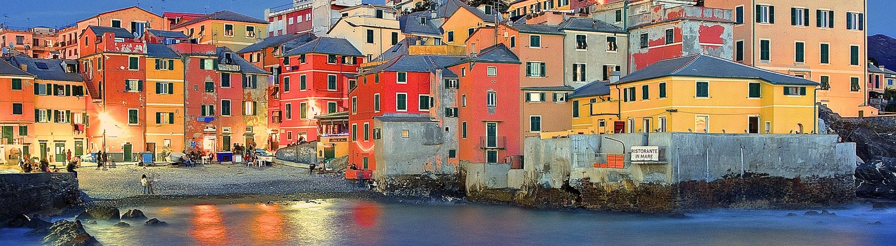
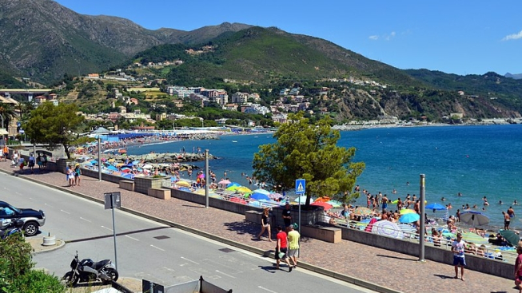
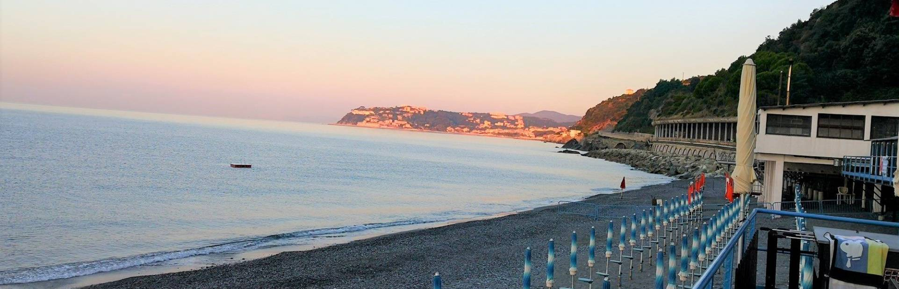
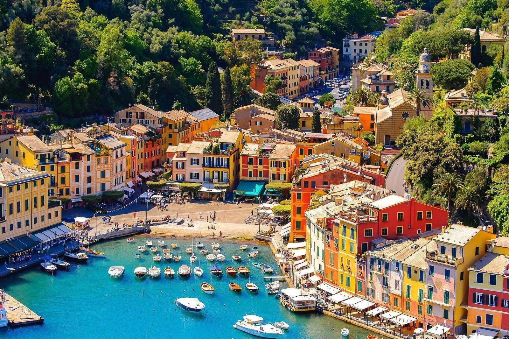
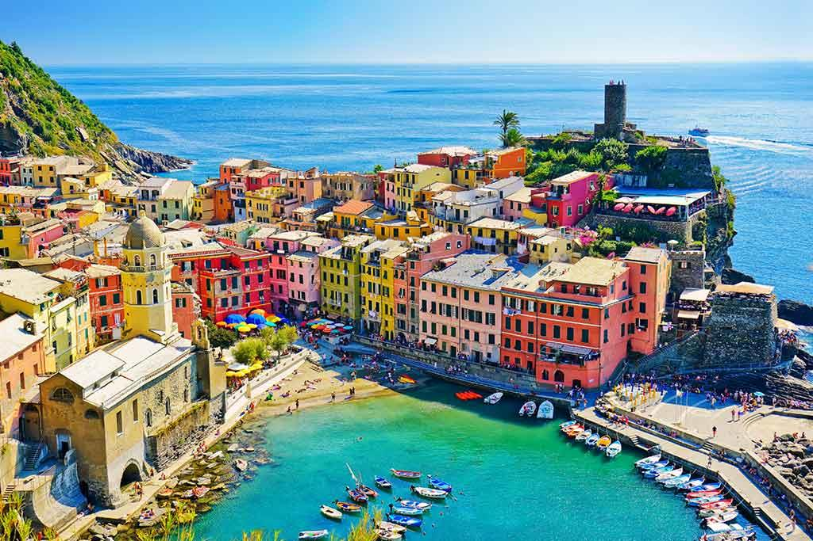

One of the largest historic centers in Europe, the Aquarium, the Old Port, the historic Rolli palaces, and the beautiful Boccadasse.

Seaside village with a promenade, beaches, and the beautiful Municipal Park.

Small seaside spot with free beaches and unspoiled nature, perfect for relaxation.

One of the most famous villages in Italy, with a colorful harbor and spectacular views.

A UNESCO World Heritage site, with villages perched above the sea and scenic hiking trails.